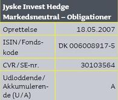

Hvad var JIHMO?
JIHMO er forkortelsen for Jyske Invest Hedge Markedsneutral – Obligationer, en hedgeforening der investerede i rentespænd, især mellem danske og tyske obligationer.
En investering med kraftig gearing
Foreningen arbejdede med gearing på op til 25 gange. Det gav mulighed for større gevinst, men betød samtidig, at tab kunne blive tilsvarende forstærket.
Lidt teknik omkring udbuddet
Tegningsperiode: 1.–26. oktober 2007
Tegningskurs: 102,00 kr. pr. stk. uden yderligere omkostninger
8. oktober 2008
På grund af den generelle usikkerhed om værdiansættelsen på det danske obligationsmarked blev prisstillelse samt emissioner og indløsninger i fondskoden udsat indtil videre.
Rige på erfaringer
I bogen beskriver forfatterne egne erfaringer og personlige beretninger fra et opslidende og opsigtsvækkende projekt. Hertil kommer beretninger fra andre investorer, der havde investeret opsparing og pension i JIHMO.
Henvendelserne fra andre investorer gjorde det tydeligt, at sagen var større end de enkelte personers tab og blev en væsentlig motivation for arbejdet.
